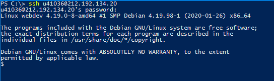
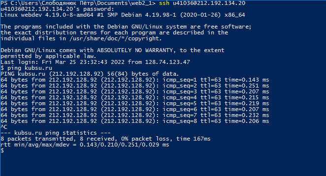
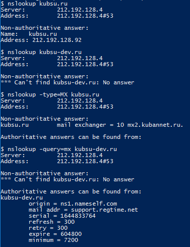
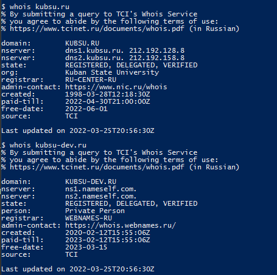
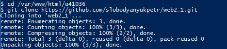

1. Подключение к учебному серверу 212.192.134.20 по SSH с помощью клиента Putty.

2.Вызов команды ping. Отправляет пакеты по протоколу ICMP на выбранный сервер для проверки качества соединения
с ним. IP сервера kubsu. ru 212.192.128.92

3. Вызов команды nslookup. Это инструмент сетевого администрирования для запросов в доменной
системе имен (DNS) с целью получения доменного имени, IP-адреса
или другой информации из записей DNS.

4. Вызов команды whois. Вывод информации о домене и его владельце

5. Клонирование репозитория из GitHub на сервер командой git clone

6. FTP (протокол передачи данных по сети) соединение через программу FileZilla. Копирование файлов находящихся на сервере на локальный компьютер